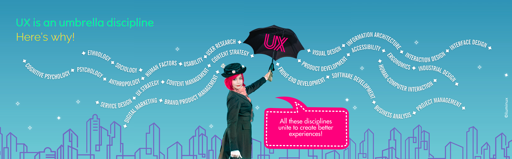

👩🚀 Sobre mí
Hola, soy Karina Hidalgo [nombre clave: Lumina], maga UX/UI y cibernauta geek de mente inquieta y curiosa.
Desde iLuminux —mi laboratorio virtual— fusiono ciencia, diseño y tecnología para transmutar ideas y proyectos en experiencias deslumbrantes.
👁️❤️🧠 La experimentación inicia con la observación empática y el pensamiento científico.
🔎🔭🔬 Luego, trabajo en la definición del problema, levantando una investigación previa que me permita obtener datos para analizar, evaluar y tomar decisiones estratégicas orientadas a la solución.
💡📝📐 Idealizo escribiendo hipótesis y fórmulas UX aún sin nombre, jugando con formas, boceteando en círculos de transmutación, hasta que una chispa de creatividad posibilita...
⚗️🧪✨ La creación de prototipos, usando la tecnología como catalizador.
🥼👓💫 Y finalmente, testeo para validar el impacto del encanto digital en la experiencia de los usuarios: escuchando, observando, iterando…
🔎🔭🔬 Luego, trabajo en la definición del problema, levantando una investigación previa que me permita obtener datos para analizar, evaluar y tomar decisiones estratégicas orientadas a la solución.
💡📝📐 Idealizo escribiendo hipótesis y fórmulas UX aún sin nombre, jugando con formas, boceteando en círculos de transmutación, hasta que una chispa de creatividad posibilita...
⚗️🧪✨ La creación de prototipos, usando la tecnología como catalizador.
🥼👓💫 Y finalmente, testeo para validar el impacto del encanto digital en la experiencia de los usuarios: escuchando, observando, iterando…
🚀 “Mis clientes son las constelaciones, y las estrellas... mis usuarios.”✨